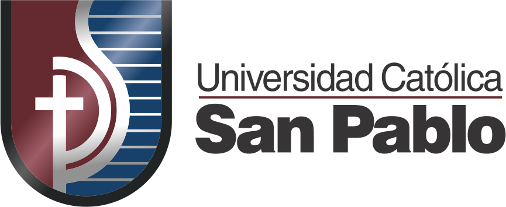
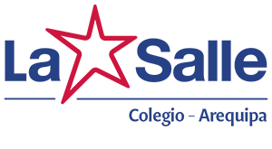

Hola, mi nombre es Diego Villalobos y actualmente estudio la carrera de Computer Science en la Universidad Catolica San Pablo (UCSP) .
En el año 2021 terminé mi formación escolar en el Colegio De La Salle , con mucha sorpresa, estudio la misma carrera con mi amigo Gabriel Baca, compañero de mi colegio.
Actualmente curso el 2 semestre, aún sigo invicto, pero poco a poco los cursos se hacen mas complicados.
Aspiro a terminar la carrera en 5 años, pero tengo la ilusión de poder estudiar en el extranjero, creo que eso podría modificar mi plan de vida.
 